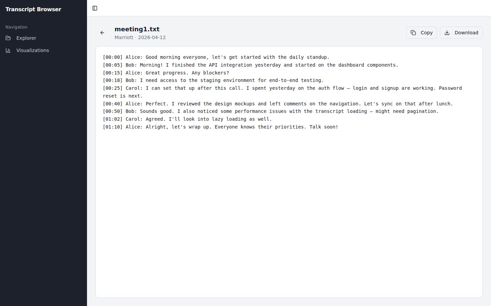
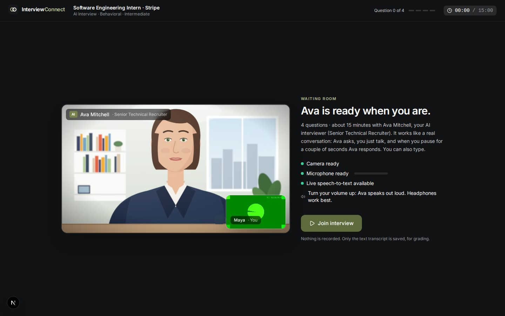
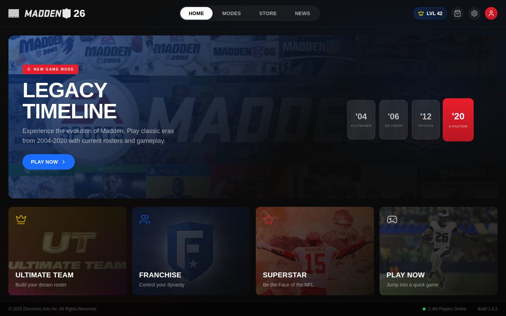
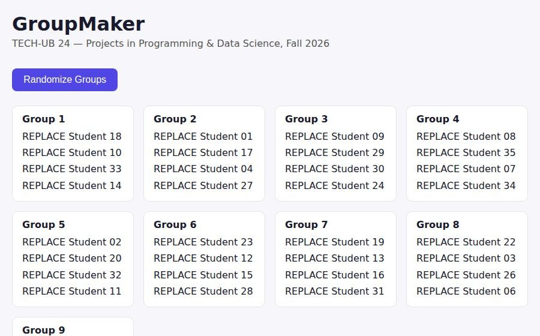
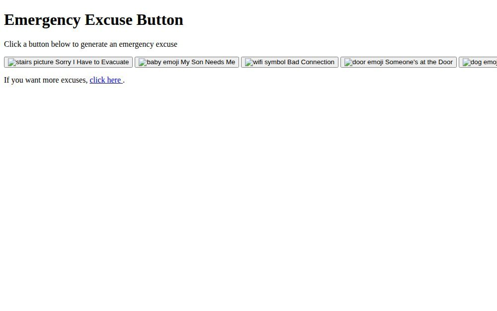

Transcript Explorer
Browse meeting transcripts by client, year and date, then open one to read, copy or download it. The data layer is separate, so the sample data can be swapped for real storage.
- React
- Vite
- shadcn/ui
Builder · AI products · Full-stack
I'm Krish. I make full-stack products with AI at the center: an AI interviewer that runs a real mock interview on camera, a game-mode pitch for EA Sports, and bots that do the boring stuff for me.
Featured · Sep 2026
Practice like it's the real interview.
A mock-interview platform for students. AI builds an interview from a real job posting and your resume. An AI interviewer with a real voice runs it on camera, or you get matched with a human. Then AI grades every answer against the same rubric.

The interview room. Ava speaks with a natural voice, listens when she finishes, and asks follow-ups based on what you said.
ElevenLabs voices and lip-sync. The mic opens when the interviewer stops talking, and a short pause ends your turn.
Pick a real internship listing and get an interview built from its job description.
Peer-to-peer WebRTC video, live transcription, and matching that scores each interviewer's fit.
STAR analysis for each answer. Quotes are checked against the transcript, so made-up ones get dropped.
Warnings first, admin review, appeals. Tech problems never count against you.
Student, interviewer and admin roles on a 32-table database, with unit and end-to-end tests.
Product case study · Feb 2026
What if you could play Madden 20 again, with this year's rosters?
Madden fans have been unhappy for years, so I designed a fix and pitched it to EA Sports: Legacy Eras. Keep modern graphics and rosters, but pick the gameplay feel of Madden 12 or Madden 20. I did the research and wrote the one-pager, then built a clickable prototype of the whole flow.

Home screen with Legacy Timeline as the featured new mode.
More projects

Browse meeting transcripts by client, year and date, then open one to read, copy or download it. The data layer is separate, so the sample data can be swapped for real storage.
Send a time, and a headless Chrome session logs in through NYU and books a group study room at Bobst Library. Runs in Docker.

The class app for Projects in Programming & Data Science. It loads the roster and shuffles it into groups, and it grows over the semester.
My setup of a Claude Code framework for job hunting. It scores the fit, drafts a tailored CV and cover letter in LaTeX, and has a reviewer agent check them.
I set up our five-person team repo and the pull-request workflow. Everyone adds their name on a branch, a teammate reviews it, then it merges.

Where it started. A one-page site with six buttons for getting out of anything, from "Bad Connection" to "My Dog Ran Away".
March 2025 to now
Emergency Excuse Button, in plain HTML.
NYU Bobst Room Booker. Three versions in two days, ending with Selenium in Docker.
Madden Legacy Mode case study and prototype.
Transcript Explorer.
Set up the AI Job Search framework.
GroupMaker, and leading our AI Project Team repo.
A full AI interview platform, built and deployed in one week.
Toolkit
I'm looking for internships and projects where AI does real work for real people.
Find me on GitHub ↗